> maintainer(“sparecores”)

@bra-fsn
Infrastructure and Python veteran.

@palabola
Guardian of the front-end and Node.js tools.

@daroczig
Hack of all trades, master of NaN.
Press Space or click the green arrow icons to navigate the slides ->
Data Science / Machine Learning batch jobs:
Data Science / Machine Learning batch jobs:
Scaling (DS) infrastructure.
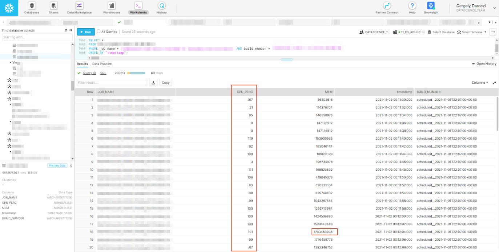
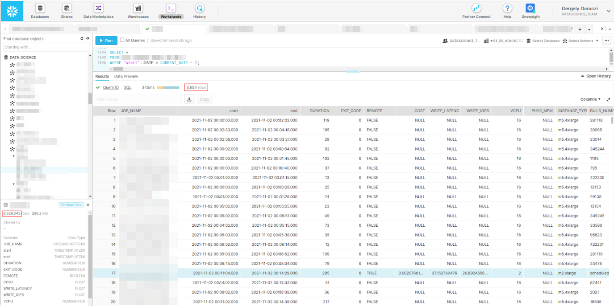
AWS ECS
AWS Batch

Kubernetes

Source: xkcd
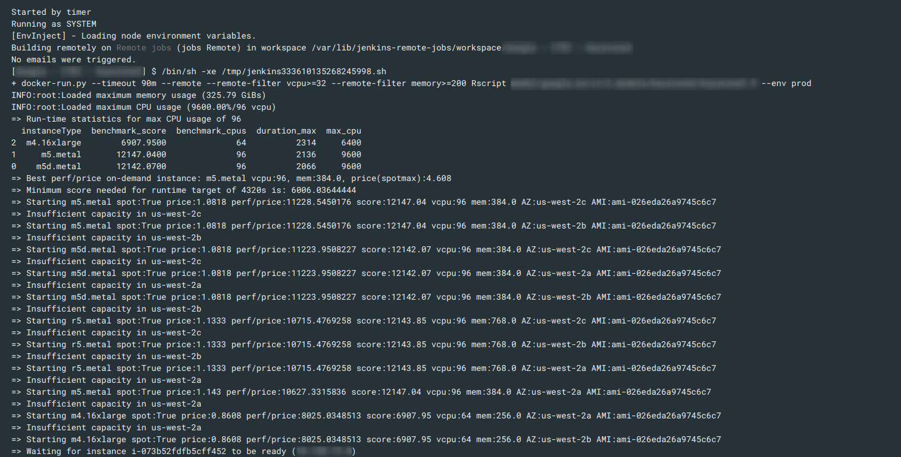
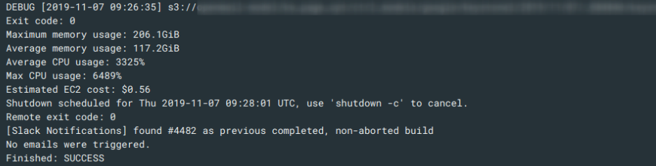
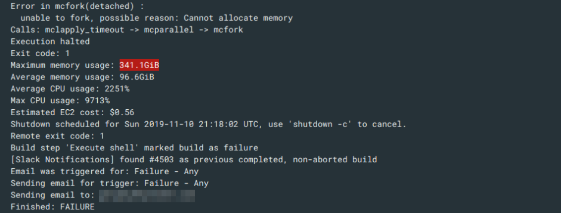
Other use-cases:
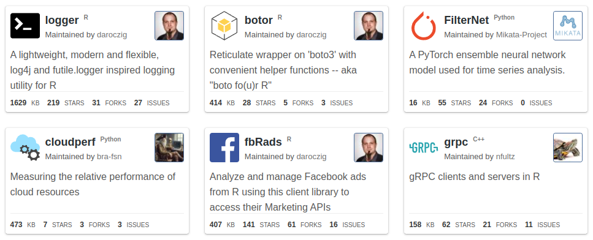
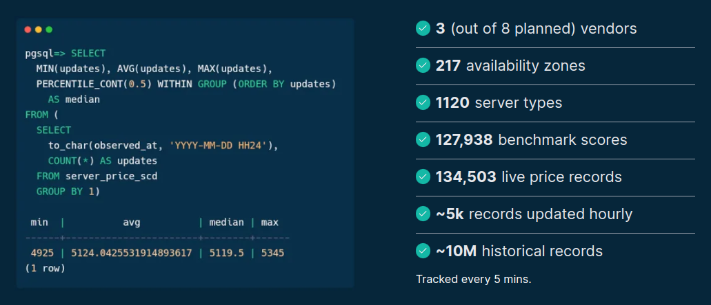
Source: sparecores.com


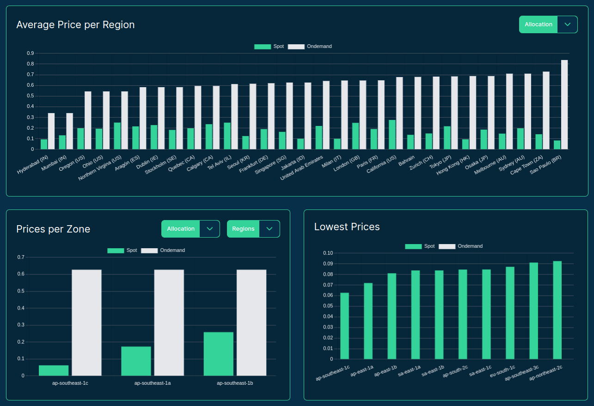
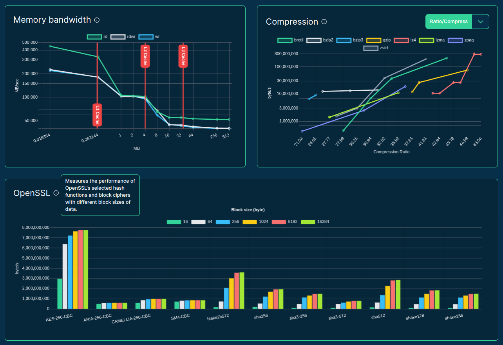
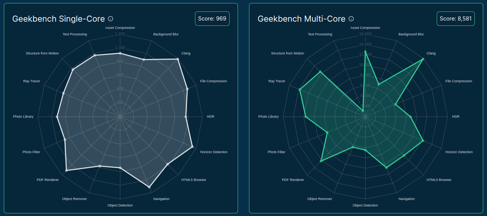
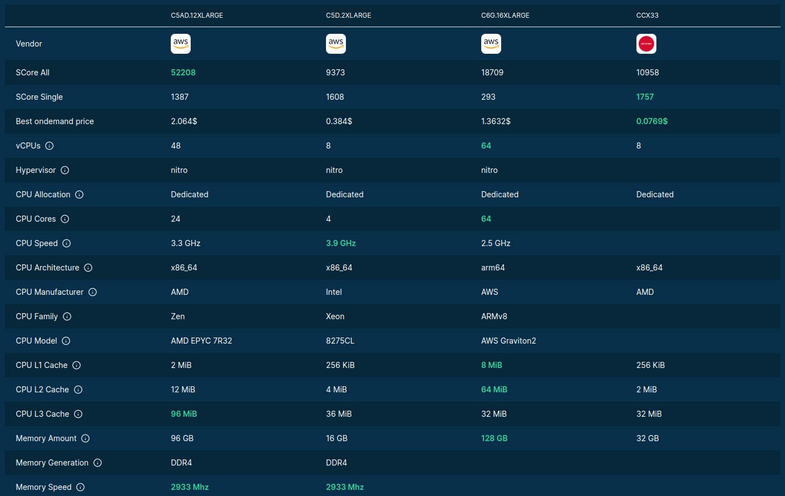
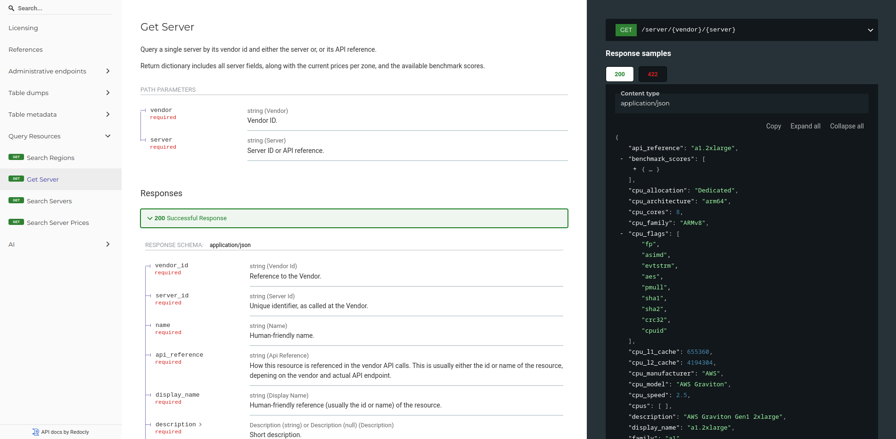
> library(reticulate)
> pms <- sapply(c('sc_crawler', 'sc_data', 'sc_keeper', 'sqlmodel'), import)
> db <- pms$sc_keeper$database$session
> Server <- pms$sc_crawler$tables$Server
> server_select <- pms$sqlmodel$select(Server)
> sc_query_one <- function(query) db$sessionmaker$exec(query)$one()$model_dump()
> sc_query_one(server_select$where(Server$vendor_id == "aws")$where(Server$server_id == "g4dn.xlarge"))
List of 41
$ server_id : chr "g4dn.xlarge"
$ vendor_id : chr "aws"
$ display_name : chr "g4dn.xlarge"
$ api_reference : chr "g4dn.xlarge"
$ name : chr "g4dn.xlarge"
$ family : chr "g4dn"
$ description : chr "Graphics intensive [Instance store volumes] [Network and EBS optimized] Gen4 xlarge"
$ status : chr "active"
$ observed_at : POSIXct[1:1], format: "2024-07-05 19:17:01"
$ hypervisor : chr "nitro"
$ vcpus : int 4
$ cpu_cores : int 2
$ cpu_allocation : chr "Dedicated"
$ cpu_manufacturer : chr "Intel"
$ cpu_family : chr "Xeon"
$ cpu_model : chr "8259CL"
$ cpu_architecture : chr "x86_64"
$ cpu_speed : num 3.5
$ cpu_l1_cache : int 131072
$ cpu_l2_cache : int 2097152
$ cpu_l3_cache : int 37486592
$ cpu_flags : chr [1:87] "fpu" "vme" "de" "pse" ...
$ memory_amount : int 16384
$ memory_generation: chr "DDR4"
$ memory_speed : int 2933
$ gpu_count : int 1
$ gpu_memory_min : int 16384
$ gpu_memory_total : int 16384
$ gpu_manufacturer : chr "Nvidia"
$ gpu_family : chr "Turing"
$ gpu_model : chr "Tesla T4"
$ gpus :List of 1
..$ :List of 10
.. ..$ manufacturer : chr "Nvidia"
.. ..$ family : chr "Turing"
.. ..$ model : chr "Tesla T4"
.. ..$ memory : int 15360
.. ..$ firmware_version: chr "535.171.04"
.. ..$ bios_version : chr "90.04.96.00.A0"
.. ..$ graphics_clock : int 1590
.. ..$ sm_clock : int 1590
.. ..$ mem_clock : int 5001
.. ..$ video_clock : int 1470
$ storage_size : int 125
$ storage_type : chr "nvme ssd"
$ storages :List of 1
..$ :List of 2
.. ..$ size : int 125
.. ..$ storage_type: chr "nvme ssd"
$ network_speed : num 5
$ inbound_traffic : num 0
$ outbound_traffic : num 0
$ ipv4 : int 0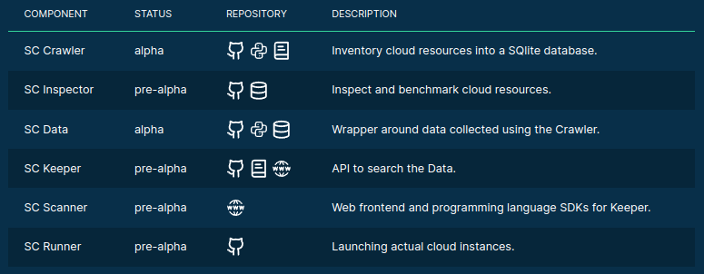
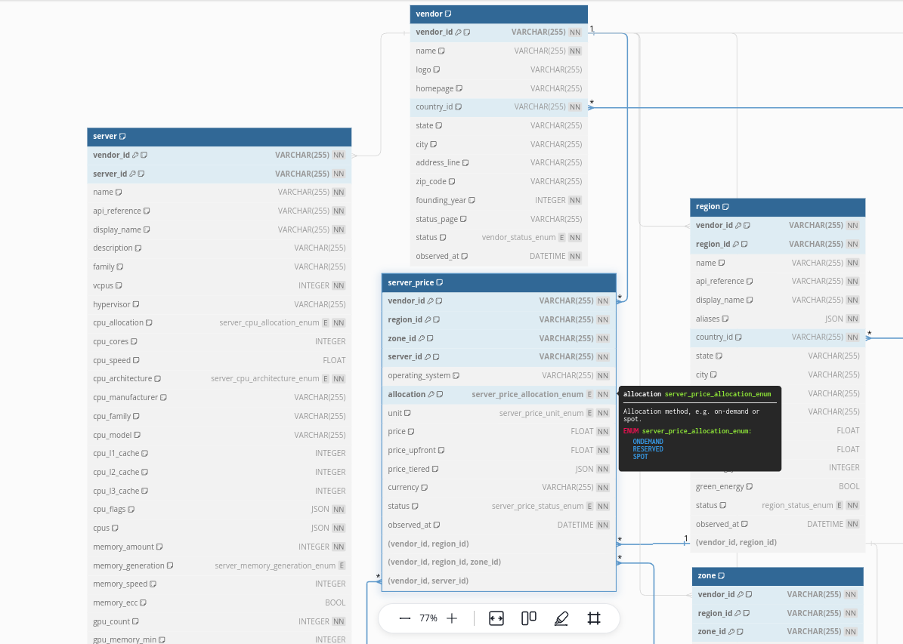
Source: dbdocs.io/spare-cores
Need to optionally track price etc. changes.
Let’s update the cpu_cores column to be optional, as
some vendors as shy sharing that over their APIs. We will backfill with
the Spare Cores Inspector!
"""v0.1.1 cores optional
Revision ID: 4691089690c2
Revises: 98894dffd37c
Create Date: 2024-04-10 00:59:03.509522
"""
from typing import Sequence, Union
import sqlalchemy as sa
import sqlmodel
from alembic import op
# revision identifiers, used by Alembic.
revision: str = "4691089690c2"
down_revision: Union[str, None] = "98894dffd37c"
branch_labels: Union[str, Sequence[str], None] = None
depends_on: Union[str, Sequence[str], None] = None
## need to provide the table schema for offline mode support
meta = sa.MetaData()
server_table = sa.Table(
"server_scd" if op.get_context().config.attributes.get("scd") else "server",
meta,
sa.Column(
"vendor_id",
sqlmodel.sql.sqltypes.AutoString(),
nullable=False,
),
sa.Column(
"server_id",
sqlmodel.sql.sqltypes.AutoString(),
nullable=False,
),
sa.Column(
"name",
sqlmodel.sql.sqltypes.AutoString(),
nullable=False,
),
sa.Column(
"vcpus",
sa.Integer(),
nullable=False,
),
sa.Column(
"hypervisor",
sqlmodel.sql.sqltypes.AutoString(),
nullable=True,
),
sa.Column(
"cpu_allocation",
sa.Enum("SHARED", "BURSTABLE", "DEDICATED", name="cpuallocation"),
nullable=False,
),
sa.Column(
"cpu_cores",
sa.Integer(),
nullable=False,
),
sa.Column(
"cpu_speed",
sa.Float(),
nullable=True,
),
sa.Column(
"cpu_architecture",
sa.Enum(
"ARM64",
"ARM64_MAC",
"I386",
"X86_64",
"X86_64_MAC",
name="cpuarchitecture",
),
nullable=False,
),
sa.Column(
"cpu_manufacturer",
sqlmodel.sql.sqltypes.AutoString(),
nullable=True,
),
sa.Column(
"cpu_family",
sqlmodel.sql.sqltypes.AutoString(),
nullable=True,
),
sa.Column(
"cpu_model",
sqlmodel.sql.sqltypes.AutoString(),
nullable=True,
),
sa.Column(
"cpus",
sa.JSON(),
nullable=False,
),
sa.Column("memory", sa.Integer(), nullable=False),
sa.Column(
"gpu_count",
sa.Integer(),
nullable=False,
),
sa.Column(
"gpu_memory_min",
sa.Integer(),
nullable=True,
),
sa.Column(
"gpu_memory_total",
sa.Integer(),
nullable=True,
),
sa.Column(
"gpu_manufacturer",
sqlmodel.sql.sqltypes.AutoString(),
nullable=True,
),
sa.Column(
"gpu_model",
sqlmodel.sql.sqltypes.AutoString(),
nullable=True,
),
sa.Column(
"gpus",
sa.JSON(),
nullable=False,
),
sa.Column(
"storage_size",
sa.Integer(),
nullable=False,
),
sa.Column(
"storage_type",
sa.Enum("HDD", "SSD", "NVME_SSD", "NETWORK", name="storagetype"),
nullable=True,
),
sa.Column(
"storages",
sa.JSON(),
nullable=False,
),
sa.Column(
"network_speed",
sa.Float(),
nullable=True,
),
sa.Column(
"inbound_traffic",
sa.Float(),
nullable=False,
),
sa.Column(
"outbound_traffic",
sa.Float(),
nullable=False,
),
sa.Column(
"ipv4",
sa.Integer(),
nullable=False,
),
sa.Column(
"status",
sa.Enum("ACTIVE", "INACTIVE", name="status"),
nullable=False,
),
sa.Column(
"observed_at",
sa.DateTime(),
nullable=False,
),
sa.ForeignKeyConstraint(
["vendor_id"],
["vendor.vendor_id"],
),
sa.PrimaryKeyConstraint("vendor_id", "server_id", "observed_at")
if op.get_context().config.attributes.get("scd")
else sa.PrimaryKeyConstraint("vendor_id", "server_id"),
)
def upgrade() -> None:
if op.get_context().config.attributes.get("scd"):
with op.batch_alter_table(
"server_scd", schema=None, copy_from=server_table
) as batch_op:
batch_op.alter_column(
"cpu_cores", existing_type=sa.INTEGER(), nullable=True
)
else:
with op.batch_alter_table(
"server", schema=None, copy_from=server_table
) as batch_op:
batch_op.alter_column(
"cpu_cores", existing_type=sa.INTEGER(), nullable=True
)
def downgrade() -> None:
if op.get_context().config.attributes.get("scd"):
with op.batch_alter_table(
"server_scd", schema=None, copy_from=server_table
) as batch_op:
batch_op.alter_column(
"cpu_cores", existing_type=sa.INTEGER(), nullable=False
)
else:
with op.batch_alter_table(
"server", schema=None, copy_from=server_table
) as batch_op:
batch_op.alter_column(
"cpu_cores", existing_type=sa.INTEGER(), nullable=False
)CREATE TABLE _alembic_tmp_server (
vendor_id VARCHAR NOT NULL,
server_id VARCHAR NOT NULL,
name VARCHAR NOT NULL,
vcpus INTEGER NOT NULL,
hypervisor VARCHAR,
cpu_allocation VARCHAR(9) NOT NULL,
cpu_cores INTEGER,
cpu_speed FLOAT,
cpu_architecture VARCHAR(10) NOT NULL,
cpu_manufacturer VARCHAR,
cpu_family VARCHAR,
cpu_model VARCHAR,
cpus JSON NOT NULL,
memory INTEGER NOT NULL,
gpu_count INTEGER NOT NULL,
gpu_memory_min INTEGER,
gpu_memory_total INTEGER,
gpu_manufacturer VARCHAR,
gpu_model VARCHAR,
gpus JSON NOT NULL,
storage_size INTEGER NOT NULL,
storage_type VARCHAR(8),
storages JSON NOT NULL,
network_speed FLOAT,
inbound_traffic FLOAT NOT NULL,
outbound_traffic FLOAT NOT NULL,
ipv4 INTEGER NOT NULL,
status VARCHAR(8) NOT NULL,
observed_at DATETIME NOT NULL,
description VARCHAR,
PRIMARY KEY (vendor_id, server_id),
FOREIGN KEY(vendor_id) REFERENCES vendor (vendor_id)
);
INSERT INTO _alembic_tmp_server (vendor_id, server_id, name, vcpus, hypervisor, cpu_allocation, cpu_cores, cpu_speed, cpu_architecture, cpu_manufacturer, cpu_family, cpu_model, cpus, memory, gpu_count, gpu_memory_min, gpu_memory_total, gpu
_manufacturer, gpu_model, gpus, storage_size, storage_type, storages, network_speed, inbound_traffic, outbound_traffic, ipv4, status, observed_at) SELECT server.vendor_id, server.server_id, server.name, server.vcpus, server.hypervisor, ser
ver.cpu_allocation, server.cpu_cores, server.cpu_speed, server.cpu_architecture, server.cpu_manufacturer, server.cpu_family, server.cpu_model, server.cpus, server.memory, server.gpu_count, server.gpu_memory_min, server.gpu_memory_total, se
rver.gpu_manufacturer, server.gpu_model, server.gpus, server.storage_size, server.storage_type, server.storages, server.network_speed, server.inbound_traffic, server.outbound_traffic, server.ipv4, server.status, server.observed_at
FROM server;
DROP TABLE server;
ALTER TABLE _alembic_tmp_server RENAME TO server;
UPDATE alembic_version SET version_num='4691089690c2' WHERE alembic_version.version_num = '98894dffd37c';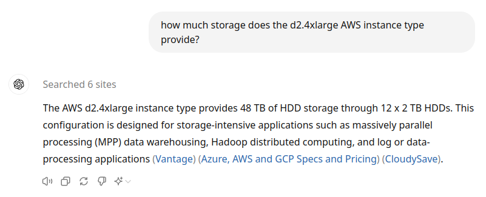
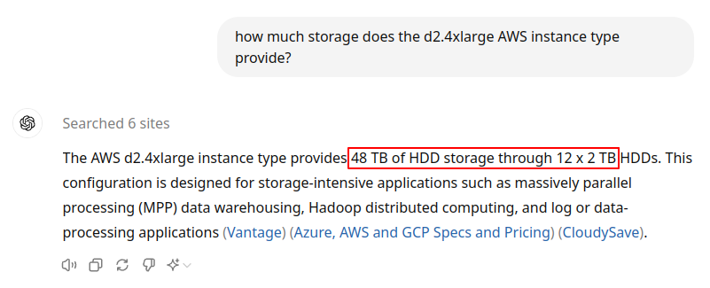
eu-west-1
Europe (Ireland)
EU (Ireland)
eu-west-1
Dublin (IE)
f1-micro is one out of 2 instances with simple
pricing.
C2D.c2, which is called “Compute
optimized”.m2 is actually priced at a premium on the top of
m1.n1 resource group is not CPU/RAM, but
N1Standard, extract if it’s CPU or RAM price from
description.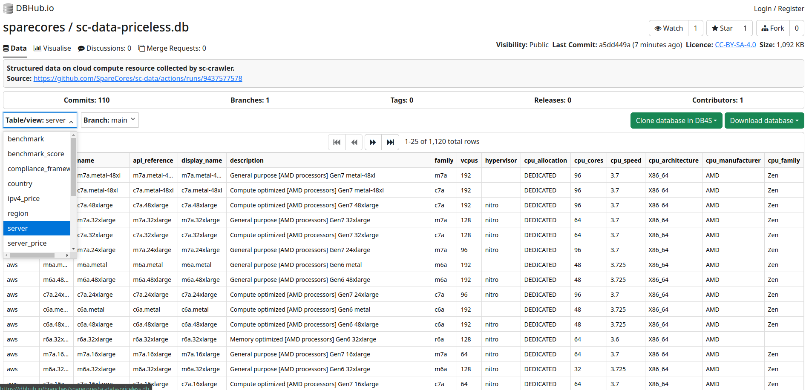
Source: dbhub.io/sparecores
Information collected from vendor APIs is very limited, so we run:
dmidecodelscpulshwbw_memstress-ng
Data is collected in public: sc-inspector-data repo on
GitHub.
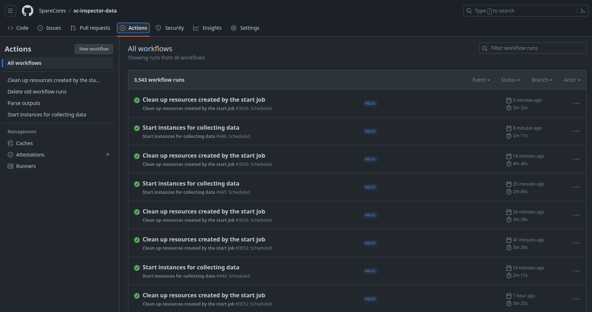
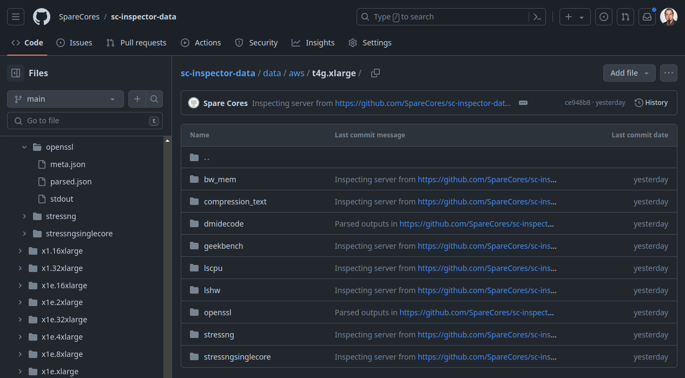
docker run --rm -ti -v /var/run/docker.sock:/var/run/docker.sock \
-e GITHUB_TOKEN=${GITHUB_TOKEN} \
-e BENCHMARK_SECRETS_PASSPHRASE=${BENCHMARK_SECRETS_PASSPHRASE} \
ghcr.io/sparecores/sc-inspector:main \
inspect --vendor ${VENDOR} --instance ${INSTANCE} --gpu-count ${GPU_COUNT}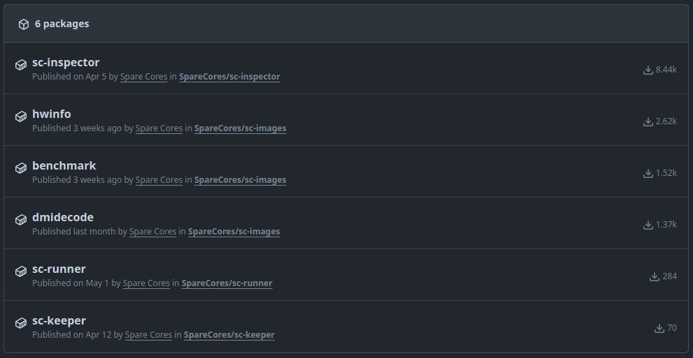
$ docker run --rm -ti \
ghcr.io/sparecores/sc-runner:main \
create aws --instance t4g.nano
Updating (aws.us-west-2.None.t4g.nano):
pulumi:pulumi:Stack runner-aws.us-west-2.None.t4g.nano running
+ pulumi:providers:aws us-west-2 creating (0s)
@ updating....
+ pulumi:providers:aws us-west-2 created (0.29s)
+ aws:ec2:SecurityGroup t4g.nano creating (0s)
@ updating.....
+ aws:ec2:SecurityGroup t4g.nano created (2s)
@ updating....
+ aws:vpc:SecurityGroupIngressRule t4g.nano-0 creating (0s)
+ aws:vpc:SecurityGroupIngressRule t4g.nano-1 creating (0s)
+ aws:ec2:Instance t4g.nano creating (0s)
+ aws:vpc:SecurityGroupEgressRule t4g.nano-1 creating (0s)
+ aws:vpc:SecurityGroupEgressRule t4g.nano-0 creating (0s)
@ updating....
+ aws:vpc:SecurityGroupIngressRule t4g.nano-0 created (1s)
+ aws:vpc:SecurityGroupIngressRule t4g.nano-1 created (1s)
+ aws:vpc:SecurityGroupEgressRule t4g.nano-1 created (1s)
@ updating....
+ aws:vpc:SecurityGroupEgressRule t4g.nano-0 created (1s)
@ updating..............
+ aws:ec2:Instance t4g.nano created (13s)
@ updating....
pulumi:pulumi:Stack runner-aws.us-west-2.None.t4g.nano
Resources:
+ 7 created
1 unchanged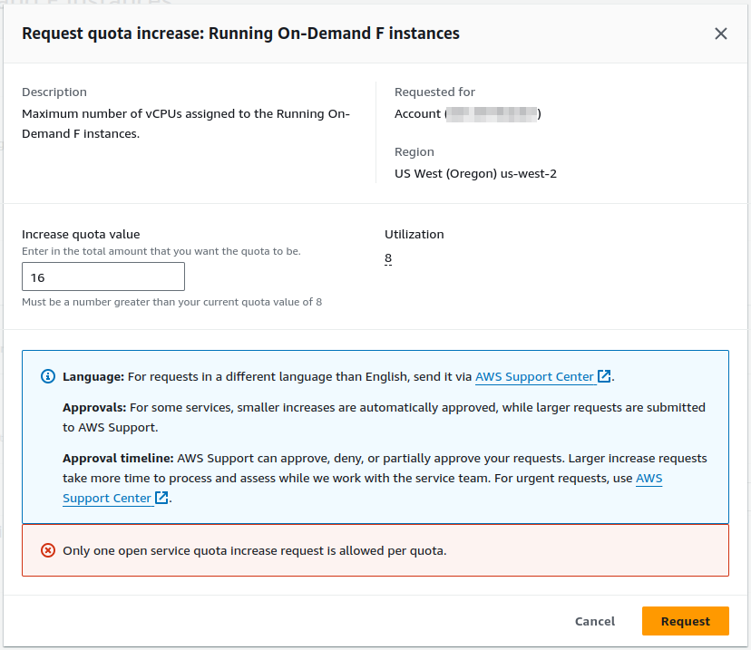
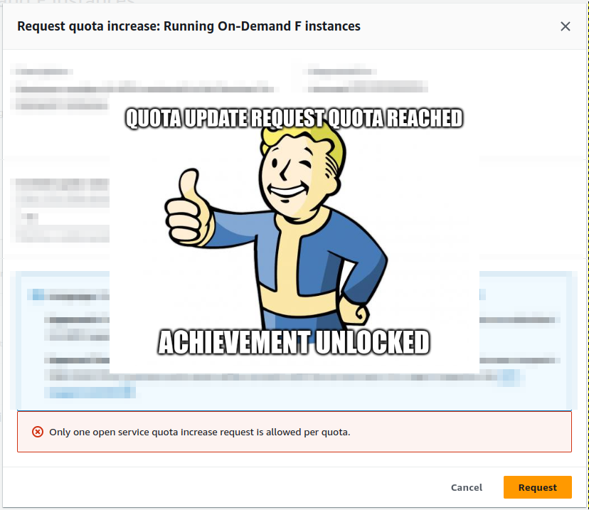
$ curl https://keeper.sparecores.net/server/aws/g4dn.xlarge | jq
% Total % Received % Xferd Average Speed Time Time Time Current
Dload Upload Total Spent Left Speed
100 111k 100 111k 0 0 79795 0 0:00:01 0:00:01 --:--:-- 79799{
"vendor_id": "aws",
"server_id": "g4dn.xlarge",
"name": "g4dn.xlarge",
"api_reference": "g4dn.xlarge",
"display_name": "g4dn.xlarge",
"description": "Graphics intensive [Instance store volumes] [Network and EBS optimized] Gen4 xlarge",
"family": "g4dn",
"vcpus": 4,
"hypervisor": "nitro",
"cpu_allocation": "Dedicated",
"cpu_cores": 2,
"cpu_speed": 3.5,
"cpu_architecture": "x86_64",
"cpu_manufacturer": "Intel",
"cpu_family": "Xeon",
"cpu_model": "8259CL",
"cpu_l1_cache": 131072,
"cpu_l2_cache": 2097152,
"cpu_l3_cache": 37486592,
"cpu_flags": [
"fpu",
"vme",
"de",
"pse",
"tsc",
"msr",
"pae",
...
],
"cpus": [],
"memory_amount": 16384,
"memory_generation": "DDR4",
"memory_speed": 2933,
"memory_ecc": null,
"gpu_count": 1,
"gpu_memory_min": 16384,
"gpu_memory_total": 16384,
"gpu_manufacturer": "Nvidia",
"gpu_family": "Turing",
"gpu_model": "Tesla T4",
"gpus": [
{
"manufacturer": "Nvidia",
"family": "Turing",
"model": "Tesla T4",
"memory": 15360,
"firmware_version": "535.171.04",
"bios_version": "90.04.96.00.A0",
"graphics_clock": 1590,
"sm_clock": 1590,
"mem_clock": 5001,
"video_clock": 1470
}
],
"storage_size": 125,
"storage_type": "nvme ssd",
"storages": [
{
"size": 125,
"storage_type": "nvme ssd"
}
],
"network_speed": 5.0,
"inbound_traffic": 0.0,
"outbound_traffic": 0.0,
"ipv4": 0,
"status": "active",
"observed_at": "2024-06-09T21:20:22.005194",
"vendor": {
"logo": "https://sc-data-public-40e9d310.s3.amazonaws.com/cdn/logos/aws.svg",
"address_line": "410 Terry Ave N",
"name": "Amazon Web Services",
"zip_code": "98109",
"founding_year": 2002,
"state": "Washington",
"status_page": "https://health.aws.amazon.com/health/status",
"vendor_id": "aws",
"homepage": "https://aws.amazon.com",
"country_id": "US",
"status": "active",
"observed_at": "2024-06-09T21:50:32.658281",
"city": "Seattle"
},
"prices": [
{
"vendor_id": "aws",
"region_id": "af-south-1",
"zone_id": "afs1-az1",
"server_id": "g4dn.xlarge",
"operating_system": "Linux",
"allocation": "ondemand",
"unit": "hour",
"price": 0.698,
"price_upfront": 0.0,
"price_tiered": [],
"currency": "USD",
"status": "active",
"observed_at": "2024-06-09T21:21:10.015921",
"region": {
"country_id": "ZA",
"state": null,
"founding_year": 2020,
"green_energy": false,
"name": "Africa (Cape Town)",
"city": "Cape Town",
"status": "active",
"address_line": null,
"observed_at": "2024-06-09T21:19:37.529944",
"zip_code": null,
"lon": 18.3758801,
"region_id": "af-south-1",
"display_name": "Cape Town (ZA)",
"lat": -33.914651,
"vendor_id": "aws",
"api_reference": "af-south-1",
"aliases": []
},
"zone": {
"region_id": "af-south-1",
"zone_id": "afs1-az1",
"api_reference": "af-south-1a",
"status": "active",
"vendor_id": "aws",
"name": "af-south-1a",
"display_name": "af-south-1a",
"observed_at": "2024-06-09T21:19:40.425499"
}
},
{
"vendor_id": "aws",
"region_id": "af-south-1",
"zone_id": "afs1-az2",
"server_id": "g4dn.xlarge",
"operating_system": "Linux",
"allocation": "spot",
"unit": "hour",
"price": 0.2251,
"price_upfront": 0.0,
"price_tiered": [],
"currency": "USD",
"status": "active",
"observed_at": "2024-06-09T18:16:26",
"region": {
"country_id": "ZA",
"state": null,
"founding_year": 2020,
"green_energy": false,
"name": "Africa (Cape Town)",
"city": "Cape Town",
"status": "active",
"address_line": null,
"observed_at": "2024-06-09T21:19:37.529944",
"zip_code": null,
"lon": 18.3758801,
"region_id": "af-south-1",
"display_name": "Cape Town (ZA)",
"lat": -33.914651,
"vendor_id": "aws",
"api_reference": "af-south-1",
"aliases": []
},
"zone": {
"region_id": "af-south-1",
"zone_id": "afs1-az2",
"api_reference": "af-south-1b",
"status": "active",
"vendor_id": "aws",
"name": "af-south-1b",
"display_name": "af-south-1b",
"observed_at": "2024-06-09T21:19:40.425554"
}
},
...
],
"benchmark_scores": [
{
"server_id": "g4dn.xlarge",
"config": {},
"status": "active",
"vendor_id": "aws",
"benchmark_id": "bogomips",
"score": 5000.0,
"note": null,
"observed_at": "2024-06-07T04:26:48.643640"
},
{
"server_id": "g4dn.xlarge",
"config": {
"cores": 1,
"framework_version": "0.17.08"
},
"status": "active",
"vendor_id": "aws",
"benchmark_id": "stress_ng:cpu_all",
"score": 1385.583093,
"note": null,
"observed_at": "2024-06-07T04:27:14.552982"
},
{
"server_id": "g4dn.xlarge",
"config": {
"cores": 4,
"framework_version": "0.17.08"
},
"status": "active",
"vendor_id": "aws",
"benchmark_id": "stress_ng:cpu_all",
"score": 4013.022928,
"note": null,
"observed_at": "2024-06-07T04:27:02.508145"
}
]
}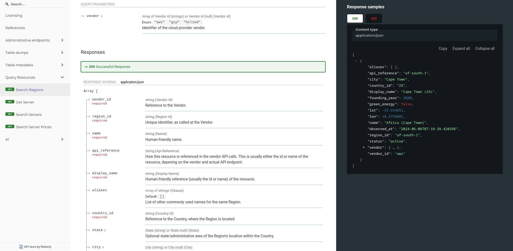
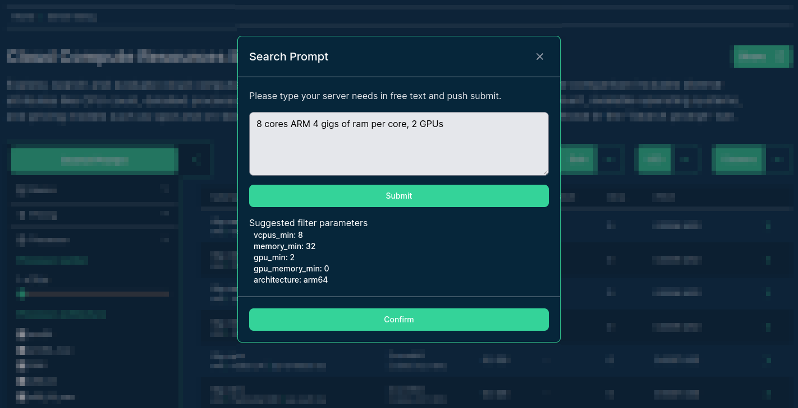
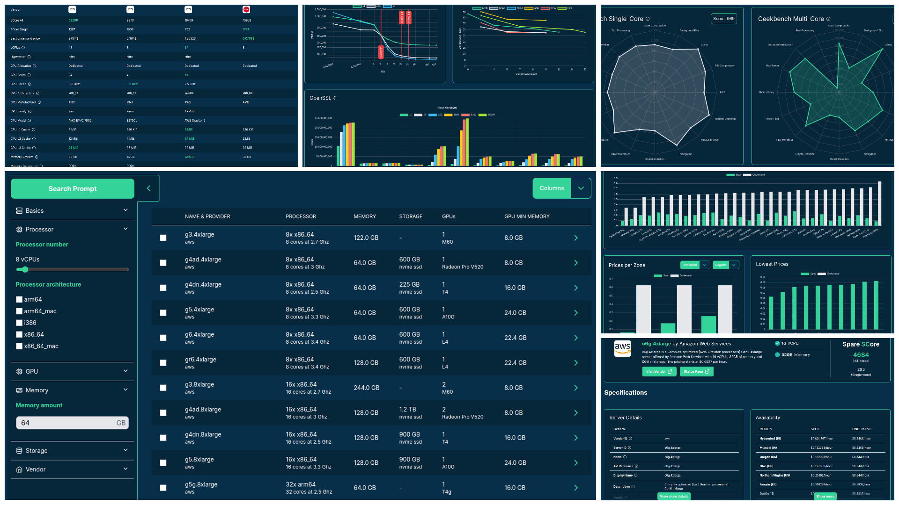
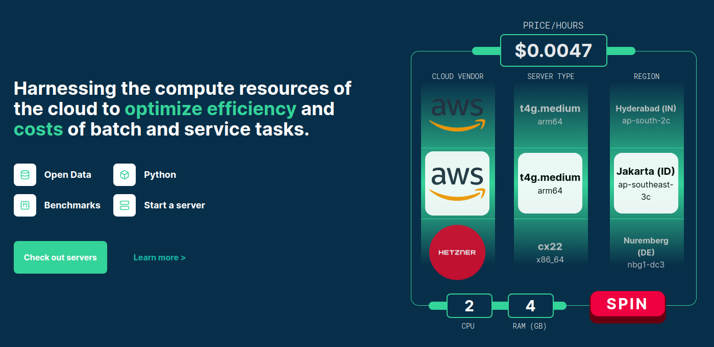
Source: sparecores.com
GBM-perf)
@bra-fsn
@palabola
@daroczig
@bra-fsn
Infrastructure and Python veteran.
@palabola
Guardian of the front-end and Node.js tools.
@daroczig
Hack of all trades, master of NaN.
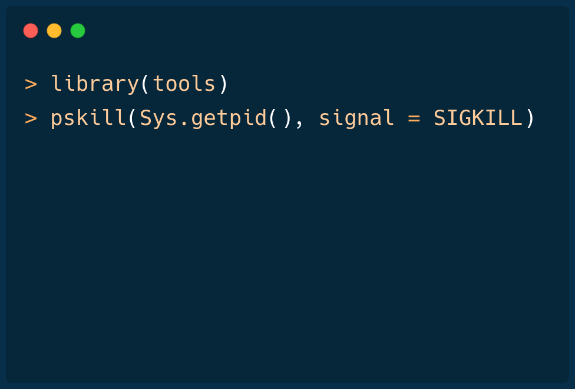
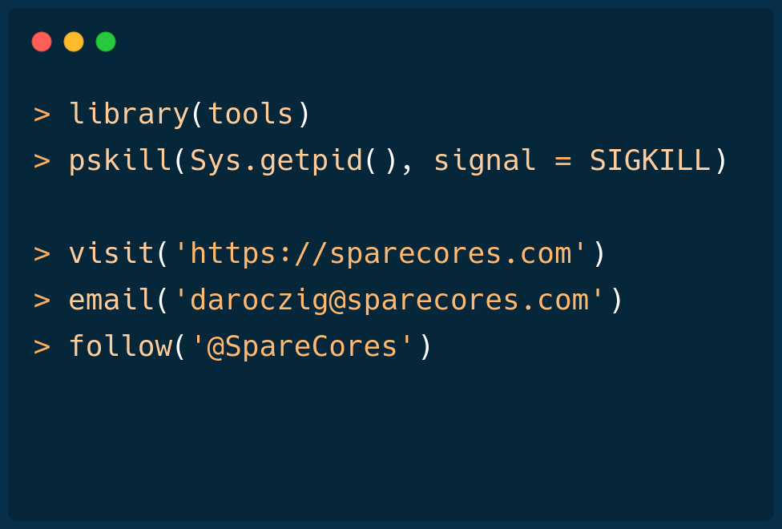
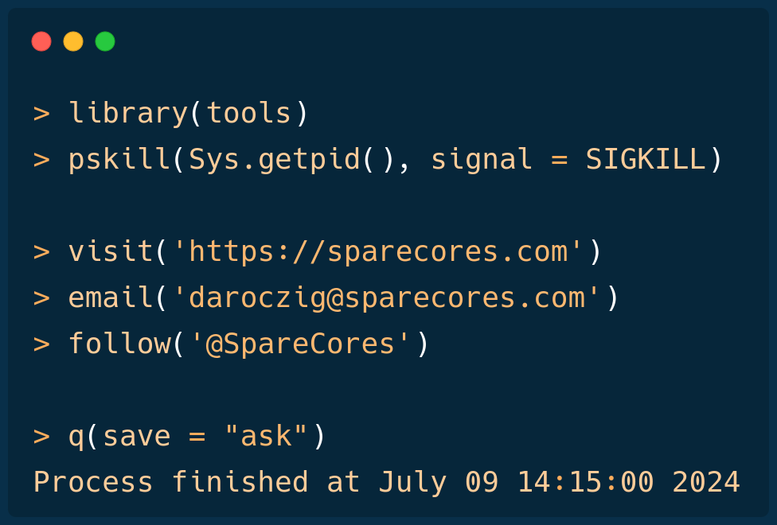
Slides: sparecores.com/talks